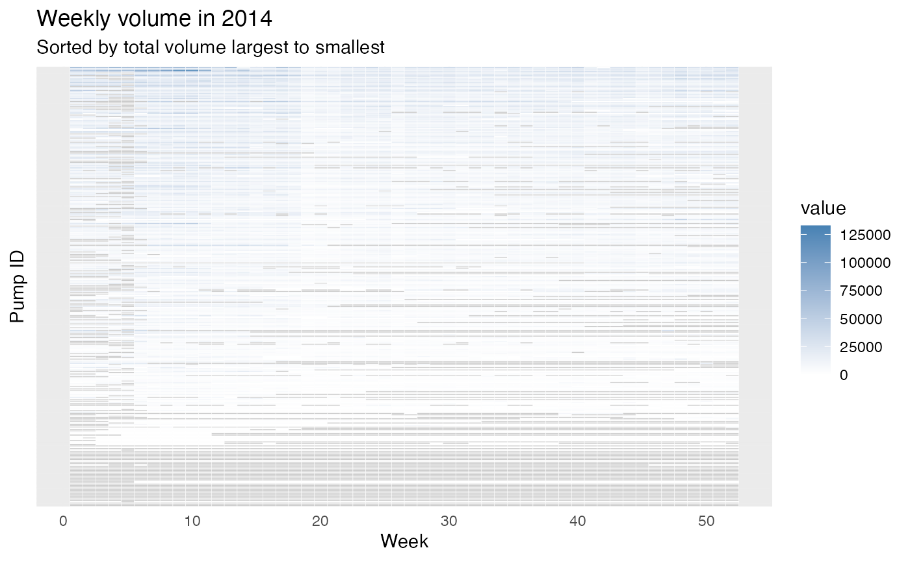
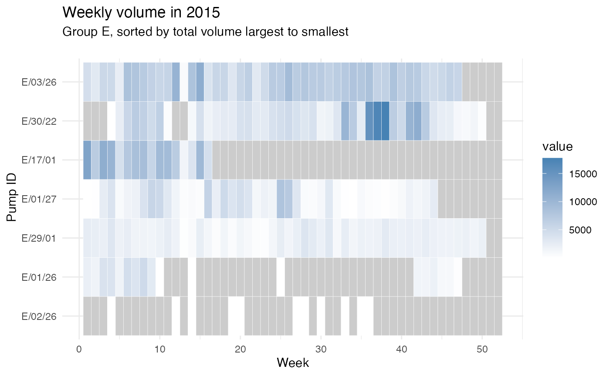

Example: track pump location and volume change
Mian Zhong
examples.RmdIn this example, you will see how to use this data package to:
- Plot an interactive map to show all monitored water hand pumps.
- Visualize the weekly volume change.
library(waterpumpkwale)
library(leaflet)
library(dplyr)
library(tidyr)
library(ggplot2)
library(forcats)Hand Pump Location Map
Using the location dataset, we can plot an interactive
map to show the locations of the hand pumps. Notice that each pump ID
starts with a letter from “A”, “B”, “C”, “D”, “E”, which may refer to a
group the pumps belong to. With this assumption, we enable the
group option in leaflet so we can select which group to be
displayed.
# customize marker icon
handpumpicon <- makeIcon(
iconUrl = "https://cdn-icons-png.flaticon.com/512/5984/5984318.png",
iconWidth = 30, iconHeight = 30
)
# plot an interactive map with group option
handpumpmap <- leaflet(options = leafletOptions(crs = leafletCRS(proj4def = "WGS84"))) %>% # declare coordinate system
addProviderTiles("OpenStreetMap") %>%
addMarkers(
data = waterpumpkwale::location |> dplyr::filter(startsWith(pumpid, "A")), # select pump id that starts with a particular string pattern
lng = ~`long_wgs84`,
lat = ~`lat_wgs84`,
popup = ~pumpid,
label = ~description,
icon = handpumpicon,
group = "Pump ID: A"
) |>
addMarkers(
data = waterpumpkwale::location |> dplyr::filter(startsWith(pumpid, "B")),
lng = ~`long_wgs84`,
lat = ~`lat_wgs84`,
popup = ~pumpid,
label = ~description,
icon = handpumpicon,
group = "Pump ID: B"
) |>
addMarkers(
data = waterpumpkwale::location |> dplyr::filter(startsWith(pumpid, "C")),
lng = ~`long_wgs84`,
lat = ~`lat_wgs84`,
popup = ~pumpid,
label = ~description,
icon = handpumpicon,
group = "Pump ID: C"
) |>
addMarkers(
data = waterpumpkwale::location |> dplyr::filter(startsWith(pumpid, "D")),
lng = ~`long_wgs84`,
lat = ~`lat_wgs84`,
popup = ~pumpid,
label = ~description,
icon = handpumpicon,
group = "Pump ID: D"
) |>
addMarkers(
data = waterpumpkwale::location |> dplyr::filter(startsWith(pumpid, "E")),
lng = ~`long_wgs84`,
lat = ~`lat_wgs84`,
popup = ~pumpid,
label = ~description,
icon = handpumpicon,
group = "Pump ID: E"
) |>
# Layers control
addLayersControl(
overlayGroups = c("Pump ID: A", "Pump ID: B", "Pump ID: C", "Pump ID: D", "Pump ID: E"),
options = layersControlOptions(collapsed = FALSE)
)
handpumpmapWe can observe that group A pumps are mostly located along the coastal line. Group B has two clusters: one is along the coastal line in upper north above Ukunda and the other is in southwest. The majority of group C is clustered in the middle region near Msambweni. Group D pumps are located along the highway A7 in the north. Finally, Group E only has a few pumps and spreads out along A7 too.
How do we display the pumps in different groups? Follow these steps:
-
Identify Pump Groups:
- Start by examining the
pumpidvariable; it indicates which group each pump belongs to.
- Start by examining the
-
Add Markers for Each Group:
- For each group of pumps, we need to add markers on the map.
- To do this, we use the
addMarkersfunction from theleafletpackage.
-
Filter Data for Each Group:
- Within each
addMarkerscall, we must specify which part of the data corresponds to one group. - To achieve this, we followed these steps:
- Observe taht the
pumpidvariable starts with a letter indicating the group, e.g., “A” in “A/01/09”. - Extract pumps from a specific group using the
startsWithfunction:startsWith(pumpid, "A"). - Apply this pattern to filter the
locationdata usinglocation |> dplyr::filter(startsWith(pumpid, "A")). You can run this alone to see that it results in a smaller dataframe. - Use the filtered data as input for the
dataparameter inaddMarkers.
- Observe taht the
- Within each
-
Control the Displayed Layers:
- After adding all the layers for different groups, you may want to control which groups are visible on the map.
- For instance, you might want to display only groups A and E.
- To achieve this flexibility, add the final step by using
addLayersControland specify the groups you want to control in theoverlayGroupsparameter. - Ensure that you use the same labels that you assigned to each group in step 3.
Weekly Volume Change
Now, we roughly know the location distribution of the pumps. Let’s digest the data a bit more! This dataset is amazingly recording every week of a year so we can explore seasonal patterns of the hand pumps.
How does weekly volume change in 2014 and 2015?
To answer this question, we are going to plot a heatmap to show the weekly volumes. A heatmap is a intuitive plot to observe, for example,
- Which weeks have larger volumes of water?
- Are two pumps performing similar?
- Which pumps or weeks are missing in monitoring?
First, we plot the heatmap for year 2014:
# Pivot the data for easier plotting
weeklyvol2014_long <- pivot_longer(weeklyvol2014, 2:53, names_to = "week")
# dplyr::filter(stringr::str_starts(pumpid, "C"))
# Set an order for plotting from largest volume to smallest
facility_order <- weeklyvol2014_long |>
group_by(pumpid) |>
summarize(tot_vol = sum(value, na.rm=T)) |>
arrange(tot_vol)
weeklyvol2014_long <- weeklyvol2014_long %>%
mutate(pumpid = fct_relevel(
pumpid, facility_order$pumpid
))
# Visualization
ggplot(weeklyvol2014_long, aes(x = as.integer(week), y = pumpid, fill = value)) +
geom_tile(color = "white") +
scale_fill_gradient(low = "white", high = "steelblue", na.value = "grey80") +
theme_minimal() +
# Aesthetic
theme(
axis.ticks.y = element_blank(),
axis.text.y = element_blank()
) +
labs(
x = "Week",
y = "Pump ID",
title = "Weekly volume in 2014",
subtitle = "Sorted by total volume largest to smallest"
)
Similarly, we plot the heatmap for year 2015:
weeklyvol2015_long <- pivot_longer(weeklyvol2015, 2:53, names_to = "week")
# dplyr::filter(stringr::str_starts(pumpid, "C"))
facility_order <- weeklyvol2015_long |>
group_by(pumpid) |>
summarize(tot_vol = sum(value, na.rm=T)) |>
arrange(tot_vol)
weeklyvol2015_long <- weeklyvol2015_long %>%
mutate(pumpid = fct_relevel(
pumpid, facility_order$pumpid
))
ggplot(weeklyvol2015_long, aes(x = as.integer(week), y = pumpid, fill = value)) +
geom_tile(color = "white") +
scale_fill_gradient(low = "white", high = "steelblue", na.value = "grey80") +
theme_minimal() +
# Aesthetic
theme(
axis.ticks.y = element_blank(),
axis.text.y = element_blank()
) +
labs(
x = "Week",
y = "Pump ID",
title = "Weekly volume in 2015",
subtitle = "Sorted by total volume largest to smallest"
)
From the figures, we can roughly see some weeks usually have larger volumes (e.g., around week 10) and many of the pumps are under-monitored (i.e., they do not have a value recorded). There are also pumps that do not have records for some weeks in a year which are typically weeks in the second half of the year. To compare two pumps, these figures might be hard to read since we have around 300 pumps and all are plotted on the same figure. Therefore, we can zoom-in a little, we can only plot several pumps or only plot a group of pumps by providing the filtered data.
Let’s take group E in year 2015:
group_e_2015 <- weeklyvol2015_long |> dplyr::filter(startsWith(as.character(pumpid), "E"))
ggplot(group_e_2015, aes(x = as.integer(week), y = pumpid, fill = value)) +
geom_tile(color = "white") +
scale_fill_gradient(low = "white", high = "steelblue", na.value = "grey80") +
theme_minimal() +
# Aesthetic
labs(
x = "Week",
y = " Pump ID",
title = "Weekly volume in 2015",
subtitle = "Group E, sorted by total volume largest to smallest
"
)
Further questions:
- Where are the pumps that have many NA values?
- Do these pumps have an improvement in year 2015 from year 2014?